| Author: | Aaron Toponce |
|---|---|
| Email: | aaron.toponce@gmail.com |
| Date: | 2016-10-11 |
This presentation is licensed under the Creative Commons Attribution-ShareAlike License.
See http://creativecommons.org/licenses/by-sa/3.0/ for more details.
This document is licensed under the CC:BY:SA Details to the license can be found here: http://creativecommons.org/licenses/by-sa/3.0/
Any conditions may be waived if you get written permission from the copyright holder.
For any reuse or distribution, you must make clear to others the license terms of this work. The best way to do this is with a link to the web page provided above or below.
The above is a human-readable summary of the license, and is not to be used as a legal substitute for the actual licnse. Please refer to the formal legal document provided here: http://creativecommons.org/licenses/by-sa/3.0/legalcode
If you come across what appears to be encrypted data, how can you know for sure? Is there anything in the data that can leak information about how it was built or what it contains? What if you stumbled across what appears to be random data? Are there any tools to determine if the data is really encrypted data?
To answer these questions, we need to setup some definitions. First, we'll define "information" as "data containing a message". This message has some sort of value. Take the letters "g", "n" followed by "u". Together, they spell "gnu", which should bring up images of African Wildebeast, or Richard Stallman. The order of the letters is important. They have meaning. They have value.
Next, we'll define "non-information" as "zero information" or "random data". This "non-information" does not contain a message. There is nothing of value in the message. Nothing can be determined from its arrangements of characters.
Given the following two strings of data, can you tell which is encrypted and which is random? Is there any way to leak any sort of information out of the strings to determine which is which?
e600cb38cb2196c54be018f2de43d43f 7b4244d2e99f9e4997820bf4ac51c00d
The first was generated with:
echo "UTOS" | aespipe | xxd -ps
with the password '12345678901234567890', and the second string was generated with:
dd if=/dev/urandom bs=1 count=16 | xxd -ps
So, in reality, both of them are "encrypted", as the latter was generated using the Linux kernel pseudorandom number generator (PRNG), which uses mathematical equations to generate cryptographically secure data.
A few points need to be addressed before moving on:
1) An attacker who knows what encryption cipher was used on the message doesn't necessarily give him any advantage on breaking the message. While there may be weaknesses in some ciphers, most "cryptographically strong" ciphers have stood the test of time, and show few weaknesses. It's knowing the secret key that gives you ultimate access.
2) As a result of #1, many utilities, such as LUKS, announce the cipher in some sort of header. This makes it easy for other utilities to take advantage of the cipher, and encrypt/decrypt data.
3) As a result of #2, because a header exists that announces that the following data is actually encrypted, and how it was encrypted, plausible deniability is lost. Should the secret police want to investigate your hard drive, and discover that it is LUKS formatted, you cannot deny that you are encrypting data.
So, rather than using the LUKS extensions, it would be preferrable to use loop-aes or dm-crypt, as no header is stored on disk. However, this makes it less convenient, as many tools will not know how to interact with the data. For example, the LUKS header can tell your operating system to prompt the user for the encrypted password when a USB drive is plugged in.
To help you understand many of these points, we will be using bitmaps for visualization. We will also be taking advantage of the bitmap header to create bitmaps out of binary files. We will be using ImageMagick to manipulate the images:
$ composite -compose difference img1.bmp img2.bmp diff.bmp
| android.bmp | blank.bmp | android-neg.bmp |
This was done using the following command:
$ composite -compose difference android.bmp blank.bmp android-neg.bmp
| 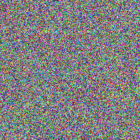 | 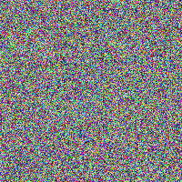 | 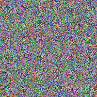 |
| random1.bmp | random2.bmp | random-neg.bmp |
This should come as no surprise. Subtracting random data from random data should yield random data.
Our plan for this presentation is to use bitmap difference composition throughout to help visualize what is going on. While using bitmaps is certainly not rigorous, it will give us a good idea as to what is going on. So, we'll start with the worst case implementation, and show how it falls apart, and work our way towards the best case implementation.
Electronic Codeblock, or ECB for short, is the simplest encryption mode for encrypting blocks. It divides the message into smaller blocks, usually 128- or 256-bits, then encrypts each bit using the provided key. Because the encryption algorithm is the same for each block, each identical plaintext block will be encrypted to identical ciphertext blocks. As a result, structured data such as images, videos and music is not hidden well.
Because each block is not dependent on the other, ECB can be highly parallelized, which results in substantial speed encrypting and decrypting the blocks.
Cipher-block Chaining, or CBC for short, requires need of an Initialization Vector (IV). This IV "kickstarts" the encryption process by XORing itself with the plaintext before encrypting each block. The resulting string is encrypted, and the ciphertext is saved to disk. It is also memory copied, and is XORed with the next plaintext block before encryption. This process continues for every block in the plaintext. As a result, identical plaintext blocks each receive a different ciphertext block. Thus, structure is not preserved, and the resulting message appears to be random.
The IV is stored on disk, or in the encrypted message, to which the key provides access to. So decryption happens in reverse. The IV is decrypted with your key, the ciphertext is decrypted with the algorithm, and the result is XORed with the IV to produce the plaintext.
Unfortunately, because of the chain, CBC cannot be parallelized. Due to the extra XOR operations as well, it is slower than non-parallelized ECB.
| 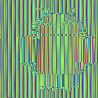 | 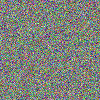 | |
| Plaintext | ECB Encrypted | CBC Encrypted |
A better example at Wikipedia.
As you can clearly see with the ECB image, the structure of the Android logo is preserved, and is clearly visible. However, the CBC image appears to be completely random data, despite the fact that it is indeed an encrypted Android logo. CBC is not the only encryption mode that chains plaintext with ciphertext, but it is one of the more popular ones.
| 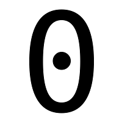 | 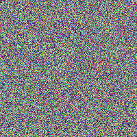 |
| 0.bmp | random.bmp |
Many blogs and forums will instruct the user to put a pseudorandom layer of data down on the hard drive first, before encrypting and formatting with your filesystem, but few explain why. Hopefully, we'll illustrate that clearly with bitmaps.
| 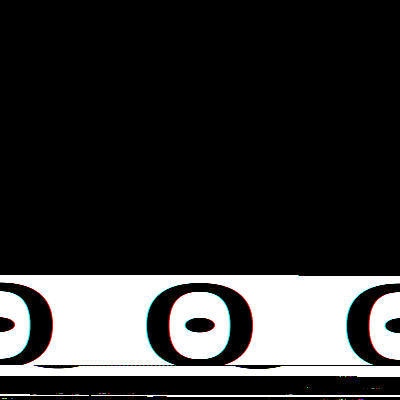 | 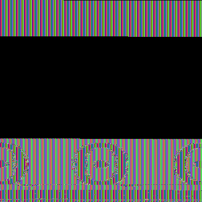 | 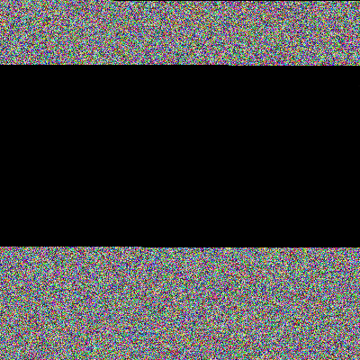 |
| Plaintext Filesystem | ECB Filesystem | CBC Filesystem |
It becomes clear that when you don't put random data down on the disk before your encrypt the filesystem, you cean clearly see where the encrypted data lies, and where it doesn't. As an attacker, where am I going to put my focus?
| 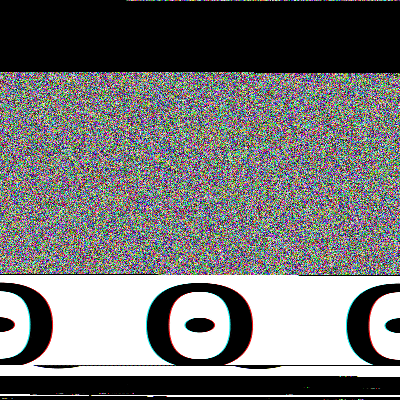 | 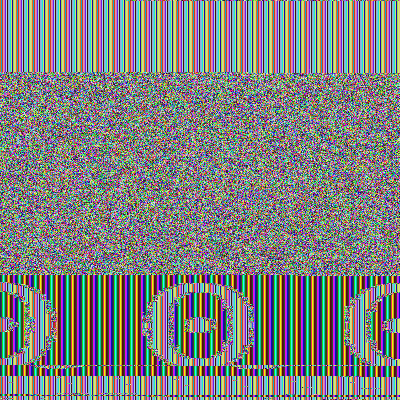 | 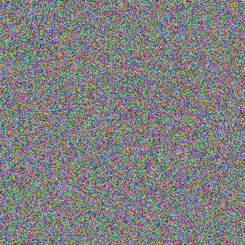 |
| Plaintext Filesystem | ECB Filesystem | CBC Filesystem |
At this point, it should be clear that putting a pseudorandom data layer down on the disk first, before encrypting, makes it difficult for an attacker to identify where the pseudorandom data ends and the encrypted filesystem begins, when using CBC mode.
We have not met our goal.
Introducing the Snapshot Attack
CBC information leak
- Single key simple IV mode
- Multi-key-v3 mode
- 128-bit aes-cbc-essiv:sha256
Despite our dest efforts of using CBC and encrypting our data, we will still suffer from information leak through what is called the "snapshot attack". This attack assumes that an attacker has physical access to your disk, and makes daily images of it. Through difference composition, we can remove similar bits betwen snapshots to reveal where the encrypted data is lying, and maybe even discover some data that it is designed to protect.
So, let's look at three cheap ways of getting the task done. First, we'll look at single key simple IV mode, which is basically a way of saying to just provide a password to kickstart the encryption. The second way is muilt-key-v3 mode, which is a way of saying to provide both a password and a physical key to start the encryption process. Lastly, we'll look at the default of LUKS, and see how it compares.
All three of these modes will reveal information about the data it's designed to protect.
| 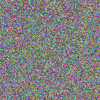 | 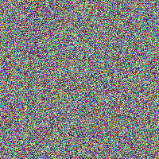 | 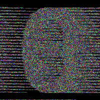 |
| aes0.bmp | aes-blank.bmp | aes-diff.bmp |
CBC has completely failed us. With our 'aes-diff.bmp' I can clearly see the underlying structure of the 0.bmp image. This is only because the password is the same between files. Our password becomes our Initialization Vector (IV). If the password was different, then we have success, but this isn't very likely, as for filesystems, you likely use the same password to unlock your hard drive.
| 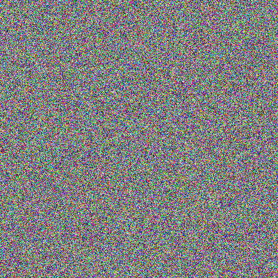 | ||
| 0.bmp | aes-diff.bmp | random.bmp |
We want our goal to be random.bmp, but we're not quite there. We have more work to do.
| 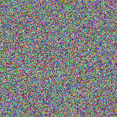 | 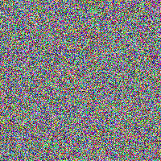 | 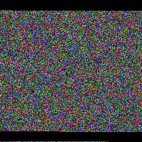 |
| aes0-v3.bmp | aes-blank-v3.bmp | aes-diff-v3.bmp |
This looks substantially better than our single key mode, and this should probably be a best practice. That is, to provide both something that you have and something that you know. Unfortunately, the geometry of my zero is setting the boundaries of the encrypted bits. Even though the data being leaked isn't significant, and we should probably use multi-key mode whenever possible, we can still do better.
| 0.bmp | aes-diff-v3.bmp | random.bmp |
This better shows how the geometry of my 0.bmp is affecting the encryption boundaries of aes-diff-v3.bmp. We are getting closer to random.bmp, however.
First, notice that we are now working on a full-blown filesystem, versus just encrypting files. The result will be a bit different as a result.
Second, notice that I'm NOT reformating the disk with a new LUKS format. This is because your password encrypts the initialization vector at first setup, and it's that IV that is responsible for encrypting and decrypting the data on/off your disk. We need to imitate thata here. We do so by copying the filesystem to another file, then modifying that filesystem, just as we would if we were working on our computer.
| 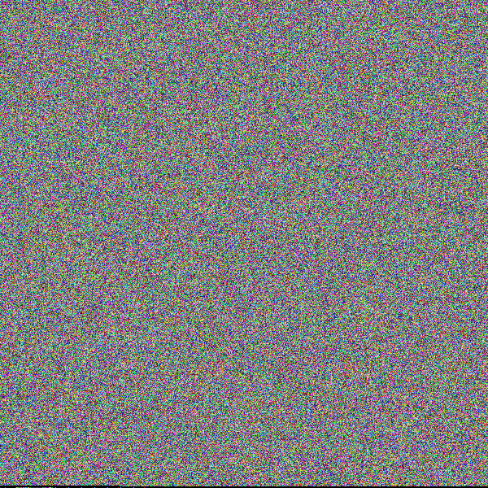 | 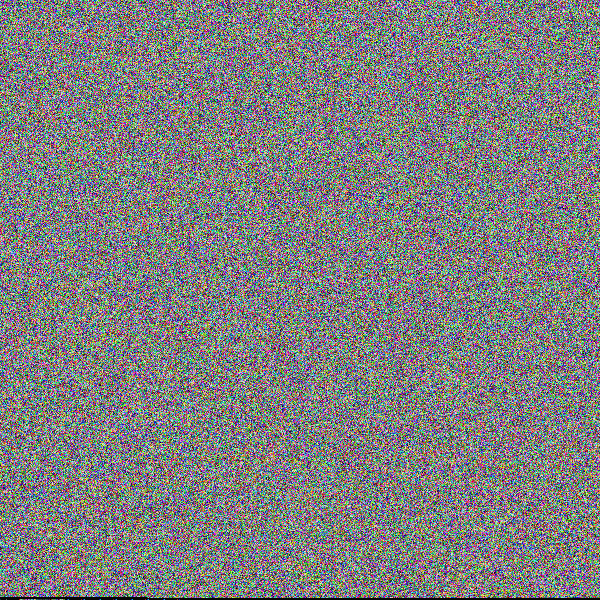 | 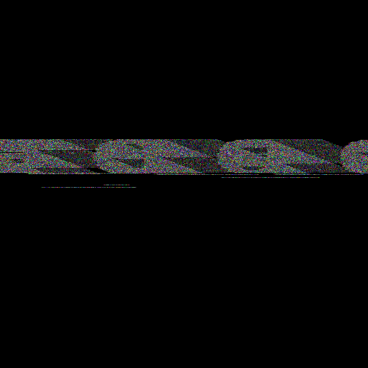 |
| aes-cbc-0.bmp | aes-cbc-blank.bmp | aes-cbc-diff.bmp |
This shouldn't be surprising, actually. Because we're not reformatting the disk between snapshots, nor changing our password, and reencrypting our disk as a result, all of the identical bits go away in the composition, and we can make out what LUKS is trying to hide.
It would be nice if LUKS supported multi-key-v3, as we could get the increased benefits of actually hiding th edata, but unfortunately, and this time, it does not.
Encryption leaks data
Recommendations for avoiding the snapshot attack
- Filling the disk with data
- Intentional fragmentation
Because LUKS is the default encrypted container for most GNU/Linux installations, we'll stick with that for the rest of this document. Because LUKS also does not support multi-key-v3 mode, we will be stuck with single key, simple IV mode. However, this isn't necessarily a bad thing, and we can do some extra steps to hide the data rather effectively, thus creating a "best practice".
First, will fill any remaining space with random data, day in and day out. Second, we could also intentionally fragment the disk, and see if that buys us any security with the filesystem snapshots.
The motivation is simple. When you are finished working at your computer, you create a "waste" file that fills the disk with random data, then leave for the day. When you get back to work, you remove the waste file, so you have space on your hard drive, then work. As you are done for the day, again you create the waste file, and go home.
Because we're creating a random waste file every day, then removing it every day, we're constantly flipping the bits on the hard drive. This will make the snapshot attack less effective, because composing a difference of two random bits results in random bits, as we already discovered. So, let's see what happens.
| 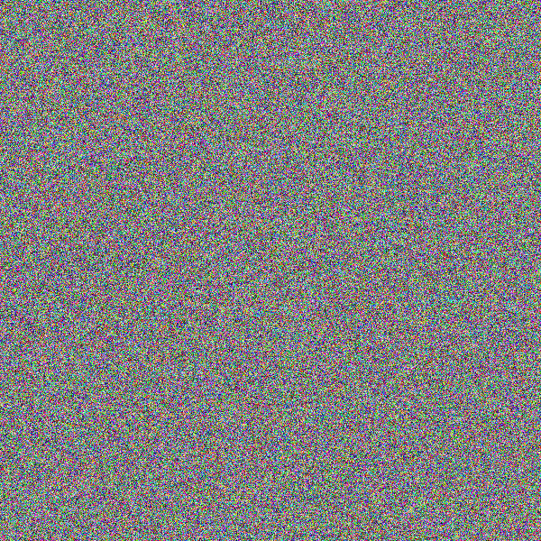 | 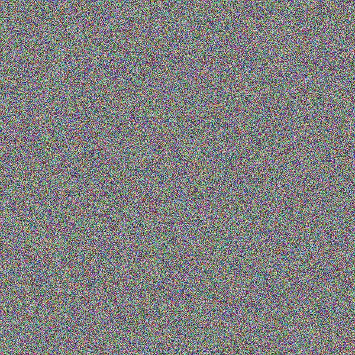 | 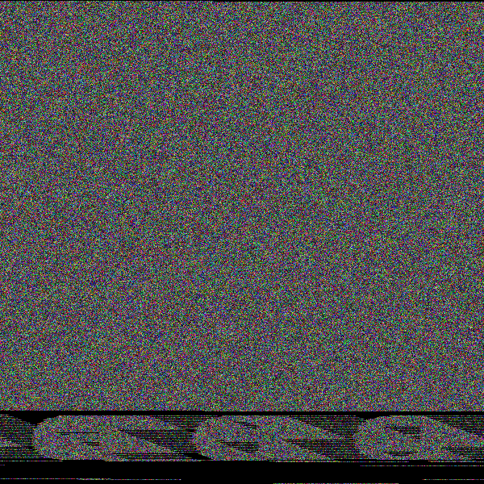 |
| aes-cbc-filled-0.bmp | aes-cbc-filled-blank.bmp | aes-cbc-filled-diff.bmp |
Much better, although I can still make out my 0.bmp on the filesystem. We already know why this is showing up, as we saw this previously. So, what can we do to prevent this data leak?
| 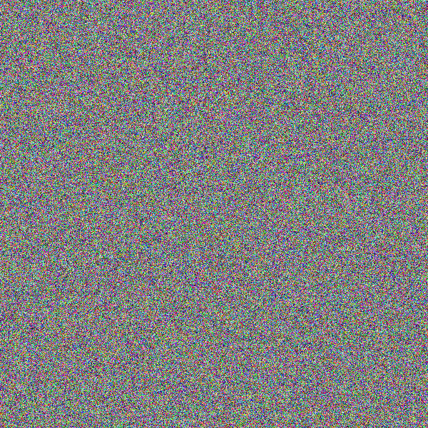 | ||
| 0.bmp | aes-cbc-filled-diff.bmp | random.bmp |
We are gettintg much, much closer to our target, but we still have data leak that we need to address. Let's address that with fragmenting the filesystem.
Generally speaking, fragmentation is a bad thing, when your hard drive consists of moving parts that need to access the data, such as platter drives. But, with the growth of SSDs, USB thumb drives, SD cards, and other solid state media, fragmentation is less of an issue. We can intentionally fragment the filesystem, and see what gains we achieve with encryption.
Notice that I'm creating a filesystem with 1024 inodes. This is because the filesystem is only 1MB in size, and ext2 doesn't generate enough inodes by default. I need more if I'm going to intentionally fragment the filesystem. Because if I run out of inodes, I run out of the ability to create new files.
I fragment the filesystem by creating 1024 files, then removing some of them. By doing so, I make just enough room to save my 0.bmp file, which will be fragmented when placed on disk.
| 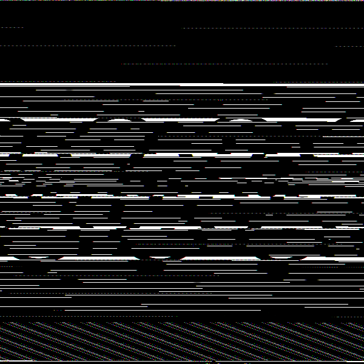 | |
| 0.bmp | ext2-frag.bmp |
As exected, my 0.bmp is highly fragmented. This is what we'll be after with encrypting the data.
Notice that I'm also filling the disk with random data. This is because we already learned that this is a "best practice", so I might as well continue doing it. So, we are both fragmenting the filesystem, and filling it with random data.
Notice that on this second filesystem, I am overwriting the fragmented bits. Remember in the snapshot attack, any similar data gets composed out. So, I need to change these bits. This could be an expensive operation, if your disk is large, and you have a lot of fragmented files. I am also overwriting the waste file, for the same reasons.
| 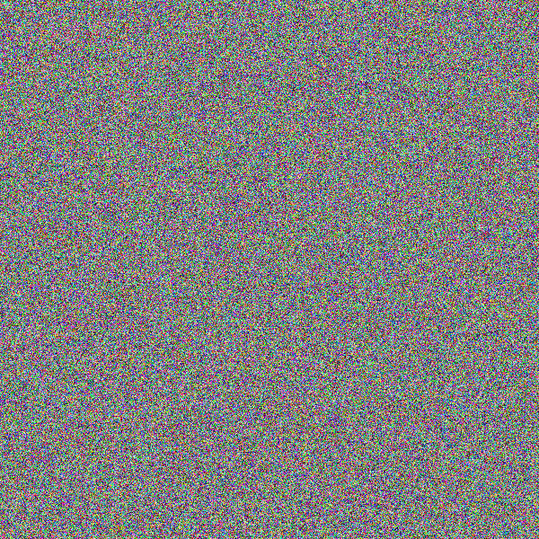 | 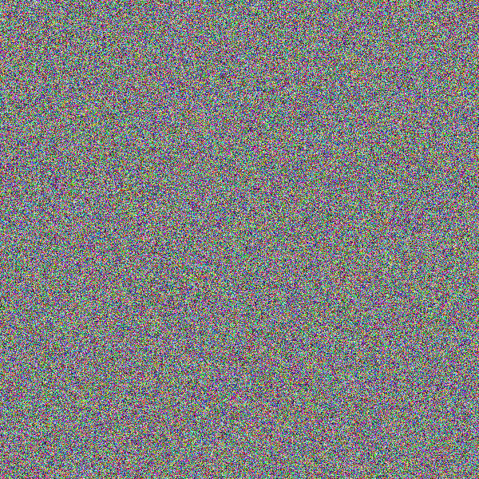 | 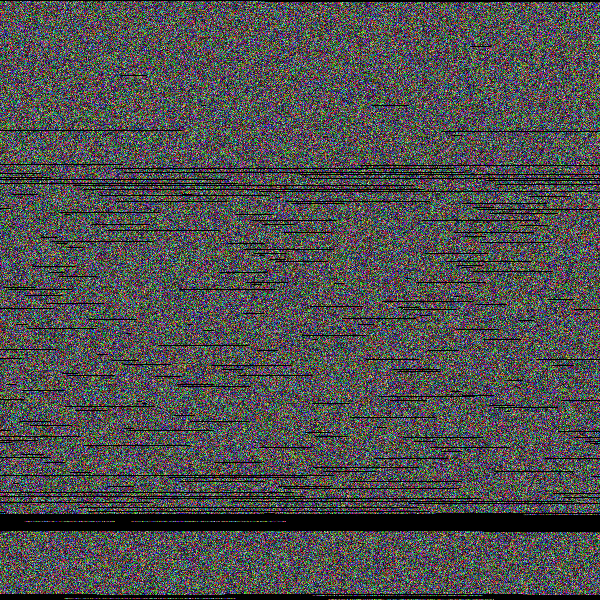 |
| aes-cbc-frag-0.bmp | aes-cbc-frag-blank.bmp | aes-cbc-frag-diff.bmp |
At this point, this is about as good as we can get with LUKS. It took a bit of work getting here, but it wasn't too bad. All we had to do was fragment the filesystem, and fill the remaining free space. If we keep on top of this on a daily basis, the snapshot attack becomes virtually ineffective.
| 0.bmp | aes-cbc-frag-diff.bmp | random.bmp |
The lines and strides you see in the fragmented filesystem are likely due to filesystem metadata, which there isn't much we can do about. This is fairly close to our result of random.bmp. If LUKS supported multi-key-v3, then we wouldn't need to do as much work, but until that fix is implemented, this is what we need to do to prevent this attack.
We've only been been discussing single use filesystems. There are other storage considerations that we need to take into account. Things such as RAID and the various levels. How would the snapshot attack look with striping, such as RAID0 or RAID10? How would the snapshot attack look with parity-based RAID5 or RAID6?
Logical volume management can align blocks to physical extents, and you can decide where to place those physical extents. How would this look with the snapshot attack? What if LVM is combined with RAID?
Copy-on-write filesystems, such as ZFS or Btrfs add a new dimension to storage with the copy-on-write approach to storing data. Combined with a great deal of metadata on the disk, such as Btrees or Merkle trees, how does this affect the snapshot attack?
LVM or ZFS/Btrfs snapshots store the snapshot in metadata pointers, and as data changes, is copied to the new volume/filesystem. How would these sort of changes look?
Compression is highly used in encryption to add entropy to the encrypted information. It is also used in modern filesystems to increase available storage. How would this thwart the snapshot attack? How would the images look?
Deduplication could be per file, or per block. If per block, how would files that have been deduplicated look? If combined with compression, how would that affect the result?
These questions haven't been investigated in this document, obviously, but might be worth the reader's time to do so. The tools and steps have already been discussed in this decument, so it should be fairly trivial to investigate these.
ECB vs CBC
Random data filesystem prep
King attack- the Snapshot Attack
Daily Routine:
- Start with fragmentation
- Overwrite fragmented bits with random data
- Work
- Fill remaining space with random data
- Repeat steps 1-3 daily